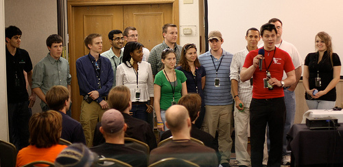
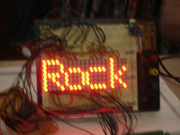

CarolinaCon 8 will be held May 11th 2012 - May 13th 2012 at the Hilton North Raleigh/Midtown
We have a reduced rate hotel reservation.
CarolinaCon is an annual conference in North Carolina that is dedicated to sharing knowledge about technology, security and information rights. CarolinaCon also serves to enhance the local and international awareness of current technology related issues and developments. CarolinaCon also strives to mix in enough entertainment and side contests/challenges to make for a truly fun event.
CarolinaCon was started in 2005 and has been held every year since. With each passing year the conference continues to grow and attract more attendees and speakers. As has always been the case, CarolinaCon is put together and run by an all-volunteer staff. CarolinaCon is proudly brought to you by "The CarolinaCon Group". The CarolinaCon Group is a non-profit organization registered in the state of NC, dedicated to educating the local and global communities about technology, information/network/computer security, and information rights.
The CarolinaCon Group is also closely associated with various 2600 chapters across NC, SC, TN, VA, LA, DC, GA, PA and NY. Many of the volunteers who help develop and deliver CarolinaCon come from those chapters.
CarolinaCon 8 will be held at a new location this year.
Hilton North Raleigh/Midtown 3415 Wake Forest Road Raleigh, North Carolina USA 27609-7330 Tel: +1-919-872-2323
NOTE: We have a reduced rate hotel reservation. The block of reduced-rate rooms is limited, so register early or you might miss out.
The schedule for CarolinaCon 8 will be posted here when it has been finalized.
If you are looking for information about attending CarolinaCon then you've clicked on the right link.
Admission to the conference is $20 at the door. There is no pre-registration. For your $20 you will receive admission to the conference and a cool CarolinaCon badge. In past years we've also given away magazines, bumper stickers, shot glasses, and free food with the cost of admission. There's no telling what we'll be giving away this year so you'll have to attend to find out.
We will also be selling t-shirts at the conference but a price for those shirts has not been determined yet. You can expect to pay similar prices to what other conferences charge for their shirts ($10~$20).
h4x0rs, InfoSec professionals, international spies, script kidz, and posers,
CarolinaCon-8 will occur on May 11th-13th 2012 in Raleigh NC (USA). We are now officially accepting speaker/paper/demo submissions for the event.
If you are somewhat knowledgeable in any interesting field of hacking, technology, robotics, science, global thermonuclear war, etc. (but mostly hacking), and are interested in presenting at CarolinaCon-8, we cordially invite you to submit your proposal. Please send;
....via e-mail to: speakers@carolinacon.org
The presentation submission coordinator is Zip. He will send you a receipt confirmation email at his first convenience.
*NOTE: All submissions are due BY March 1st, 2012. However...we may be making some early selections this year from amongst the submissions, so please be timely in submission if you're committed to being part of the elite cadre of chosen presenters. We value diversity so please don't hesitate to propose your ideas no matter how outlandish.
If you present at the Con, you will receive;
If you are interested in becoming a volunteer for CarolinaCon then head over to the NC2600 forums and start posting. Most of our volunteers come from the NC2600 forum and the NC2600 forum community will be happy to talk with you.
CarolinaCon is proudly brought to you by "The CarolinaCon Group". The CarolinaCon Group is a non-profit organization registered in the state of NC, dedicated to educating the local and global communities about technology, information/network/computer security, and information rights. The CarolinaCon Group is also closely associated with various "2600" chapters across NC, SC, TN, VA, LA, DC, and NY. Many of the volunteers who help develop and deliver CarolinaCon come from those chapters.
CarolinaCon is mainly about the educational talks, presentations, and demos. Alongside those we will have several other technology-related contests and challenges. Details on other events will be announced on our website as they are planned out.
We don't accept any, so don't bother asking. Capitalism and philanthropic knowledge-sharing don't mix in our opinion. We keep our admission price to the bare minimum to cover our venue and equipment expenses. All of our staff are volunteers who generously donate their time and energy. All of our presenters generously donate their time and talent. The only items sold at CarolinaCon are a limited quantity of single-design CarolinaCon t-shirts....and we only make and sell those because attendees and staff want them.
Well that's a different story. We will gladly accept donations from anyone who wants to contribute. At CarolinaCon, we pride ourselves on not charging a lot for admission so we don't have a lot to spend on giveaways (we manage though). We can always use prizes for Hacker Jeopardy and various other contests that we run so if you want to donate an actual prize, rather than cash, just let us know by sending an email to info@carolinacon.org. We'll also take cash. :-)
For information about the event, please contact info@carolinacon.org or @CarolinaCon.
Speakers should contact speakers@carolinacon.org
{kind=link}
{kind=link}
{kind=link}
{kind=link}
{kind=link}
{kind=link}
{kind=link}